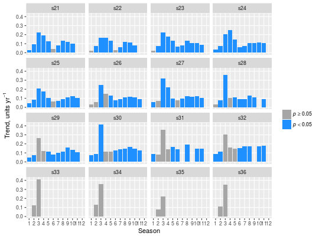

Finds the trend for each season and each variable in a time series.
seasonTrend(x, plot = FALSE, type = c("slope", "relative"), pval = 0.05, ...)
| x | Time series vector, or time series matrix with column names |
|---|---|
| plot | Should the results be plotted? |
| type | Type of trend to be plotted, actual or relative to series median |
| pval | p-value for significance |
| ... | Further options to pass to plotting function |
A data frame with the following fields:
series names
season number
Sen slope in original units per year
Sen slope divided by median for that specific season and series
p-value for the trend according to the Mann-Kendall test.
Proportion of slopes joining first and last fifths of the data that are missing
The Mann-Kendall test is applied for each season and series (in the case of
a matrix). The actual and relative Sen slope (actual divided by median for
that specific season and series); the p-value for the trend; and the
fraction of missing slopes involving the first and last fifths of the data
are calculated (see mannKen).
If plot = TRUE, each season for each series is represented by a bar
showing the trend. The fill colour indicates whether \(p < 0.05\) or not.
If the fraction of missing slopes is 0.5 or more, the corresponding trends
are omitted.
Parameters can be passed to the plotting function, in particular, to
facet_wrap in ggplot2. The most useful parameters here are
ncol (or nrow), which determines the number of columns (or
rows) of plots, and scales, which can be set to "free_y" to
allow the y-axis to change for each time series. Like all ggplot2
objects, the plot output can also be customized extensively by modifying and
adding layers.
mannKen, plotSeason,
facet_wrap
x <- sfbayChla seasonTrend(x)#> series season sen.slope sen.slope.rel p.value miss #> 1 s21 1 0.02582456 0.018476222 2.063109e-02 0.429 #> 2 s21 2 0.09055556 0.055622661 2.357831e-04 0.143 #> 3 s21 3 0.22425926 0.064271244 4.200806e-04 0.286 #> 4 s21 4 0.19305556 0.040038049 1.381407e-02 0.286 #> 5 s21 5 0.12873016 0.040815179 2.091911e-03 0.388 #> 6 s21 6 0.04429694 0.015143926 2.205212e-01 0.388 #> 7 s21 7 0.08115942 0.038816429 3.016211e-03 0.388 #> 8 s21 8 0.13115385 0.060824742 1.528304e-03 0.429 #> 9 s21 9 0.11846154 0.049549550 9.833619e-04 0.265 #> 10 s21 10 0.09744268 0.051095353 7.681235e-04 0.388 #> 11 s21 11 0.11195652 0.061538462 5.382187e-04 0.510 #> 12 s21 12 0.09467787 0.072380952 3.640470e-04 0.633 #> 13 s22 1 0.01877778 0.013027903 2.742615e-01 0.429 #> 14 s22 2 0.07281145 0.045542417 3.204204e-03 0.143 #> 15 s22 3 0.16533333 0.062686567 1.792358e-04 0.286 #> 16 s22 4 0.16833333 0.038329288 1.381407e-02 0.286 #> 17 s22 5 0.13421053 0.046189376 8.621461e-03 0.388 #> 18 s22 6 0.02816667 0.008680242 4.410008e-01 0.388 #> 19 s22 7 0.05916667 0.028563453 1.833157e-02 0.388 #> 20 s22 8 0.12100000 0.061118848 2.281250e-03 0.429 #> 21 s22 9 0.11171569 0.057075980 1.372855e-04 0.265 #> 22 s22 10 0.08262014 0.033116468 1.309395e-02 0.388 #> 23 s22 11 0.09712418 0.055902778 6.169274e-04 0.510 #> 24 s22 12 0.08714286 0.061860670 5.664976e-04 0.633 #> 25 s23 1 0.02490000 0.015808775 1.498717e-01 0.286 #> 26 s23 2 0.07477778 0.047722567 1.014759e-02 0.000 #> 27 s23 3 0.22634921 0.073819163 1.101182e-03 0.143 #> 28 s23 4 0.18045455 0.039831639 1.078891e-02 0.143 #> 29 s23 5 0.13411765 0.048451548 4.558221e-04 0.265 #> 30 s23 6 0.06923684 0.025048465 3.092915e-02 0.265 #> 31 s23 7 0.07990385 0.045241313 5.153545e-04 0.265 #> 32 s23 8 0.13000000 0.065897436 8.584157e-04 0.429 #> 33 s23 9 0.10689655 0.048969072 8.034765e-03 0.265 #> 34 s23 10 0.10946316 0.053039927 8.498215e-05 0.265 #> 35 s23 11 0.08671053 0.050238095 2.245618e-03 0.388 #> 36 s23 12 0.09000000 0.067661692 5.974040e-04 0.510 #> 37 s24 1 0.03722222 0.026737968 2.439877e-02 0.286 #> 38 s24 2 0.07224638 0.048728632 7.859583e-04 0.000 #> 39 s24 3 0.20340476 0.062720612 2.635687e-04 0.000 #> 40 s24 4 0.25310317 0.044190334 1.089705e-02 0.000 #> 41 s24 5 0.14689655 0.050260787 1.320966e-03 0.265 #> 42 s24 6 0.06000000 0.026364960 1.720610e-02 0.265 #> 43 s24 7 0.07375000 0.051000000 6.877945e-04 0.265 #> 44 s24 8 0.10450725 0.058492063 1.264730e-03 0.429 #> 45 s24 9 0.10784615 0.060579650 1.873869e-04 0.265 #> 46 s24 10 0.11428571 0.062893082 1.559275e-05 0.265 #> 47 s24 11 0.10453634 0.070852464 7.144313e-05 0.388 #> 48 s24 12 0.08200000 0.060606061 3.929482e-04 0.510 #> 49 s25 1 0.04253394 0.024442469 3.755059e-02 0.286 #> 50 s25 2 0.08107619 0.046081794 2.189389e-02 0.143 #> 51 s25 3 0.20888889 0.054457143 7.243571e-03 0.143 #> 52 s25 4 0.17304147 0.028059344 3.944737e-02 0.000 #> 53 s25 5 0.10125000 0.032518739 4.384618e-02 0.265 #> 54 s25 6 0.06224747 0.027655110 1.010486e-01 0.388 #> 55 s25 7 0.06842105 0.038847118 2.511973e-03 0.265 #> 56 s25 8 0.09133333 0.045138527 3.211097e-04 0.429 #> 57 s25 9 0.10859524 0.057490304 7.815038e-04 0.265 #> 58 s25 10 0.12047619 0.061641429 1.123478e-05 0.265 #> 59 s25 11 0.10363636 0.060857213 2.028286e-04 0.388 #> 60 s25 12 0.08500000 0.064615385 6.354214e-04 0.510 #> 61 s26 1 0.03000000 0.016216216 1.415092e-01 0.286 #> 62 s26 2 0.06121795 0.031590657 6.597205e-02 0.000 #> 63 s26 3 0.24561463 0.044749941 1.788872e-02 0.000 #> 64 s26 4 0.14691358 0.022686695 1.315212e-01 0.000 #> 65 s26 5 0.12750000 0.037815126 6.726327e-03 0.265 #> 66 s26 6 0.07850000 0.031029222 3.488656e-02 0.265 #> 67 s26 7 0.09276471 0.044572126 4.108105e-04 0.265 #> 68 s26 8 0.10888889 0.051851852 1.639977e-03 0.429 #> 69 s26 9 0.11653846 0.053915392 9.480869e-03 0.265 #> 70 s26 10 0.11068182 0.058503497 1.470606e-04 0.265 #> 71 s26 11 0.08800000 0.056000244 3.845248e-03 0.388 #> 72 s26 12 0.07659420 0.054352544 5.208117e-03 0.510 #> 73 s27 1 0.05820175 0.035754535 7.235176e-03 0.286 #> 74 s27 2 0.07080000 0.037224259 5.103543e-02 0.000 #> 75 s27 3 0.32218661 0.069793023 3.333564e-03 0.000 #> 76 s27 4 0.22038194 0.025648900 4.608393e-02 0.000 #> 77 s27 5 0.09700000 0.025641026 1.312726e-02 0.265 #> 78 s27 6 0.08025000 0.029109006 6.330431e-02 0.265 #> 79 s27 7 0.09861111 0.063198784 4.136352e-05 0.265 #> 80 s27 8 0.12445833 0.060735736 2.574579e-03 0.429 #> 81 s27 9 0.11500000 0.056108597 1.751163e-05 0.265 #> 82 s27 10 0.12615385 0.074422583 1.403962e-05 0.265 #> 83 s27 11 0.10424242 0.072231140 1.544500e-05 0.388 #> 84 s27 12 0.08791667 0.070532915 5.138852e-04 0.510 #> 85 s28 1 0.03157895 0.019270833 9.052551e-02 0.286 #> 86 s28 2 0.07618820 0.041502114 2.080455e-02 0.000 #> 87 s28 3 0.36193667 0.056723751 1.089705e-02 0.000 #> 88 s28 4 0.10500000 0.011532738 4.145985e-01 0.000 #> 89 s28 5 0.10850000 0.033906250 2.856768e-02 0.265 #> 90 s28 6 0.09067873 0.037591036 2.554345e-02 0.265 #> 91 s28 7 0.09235714 0.052916667 4.402259e-05 0.388 #> 92 s28 8 0.12966667 0.058024691 5.128564e-03 0.429 #> 93 s28 9 0.11275362 0.044800664 3.120179e-04 0.265 #> 94 s28 10 0.12153846 0.055555556 3.993113e-03 0.510 #> 95 s28 11 0.08846154 0.057142857 4.074511e-03 0.388 #> 96 s28 12 0.08366667 0.061231244 1.018698e-02 0.510 #> 97 s29 1 0.05120690 0.029428105 2.642330e-02 0.286 #> 98 s29 2 0.07160819 0.035634921 8.572623e-03 0.000 #> 99 s29 3 0.26152899 0.033585203 5.363684e-02 0.000 #> 100 s29 4 0.12291667 0.013603409 2.117869e-01 0.000 #> 101 s29 5 0.11394231 0.034075957 4.466251e-02 0.265 #> 102 s29 6 0.07797980 0.035250115 2.805637e-02 0.265 #> 103 s29 7 0.10285714 0.059523810 2.533027e-04 0.265 #> 104 s29 8 0.11366667 0.050435855 8.884414e-03 0.429 #> 105 s29 9 0.15761905 0.067187500 8.758759e-05 0.265 #> 106 s29 10 0.13625000 0.070798425 3.567684e-05 0.265 #> 107 s29 11 0.10417391 0.069006919 6.443038e-05 0.388 #> 108 s29 12 0.08615385 0.065846154 2.106459e-03 0.510 #> 109 s30 1 0.07600000 0.048951049 5.340930e-04 0.286 #> 110 s30 2 0.08908120 0.039410244 3.643308e-03 0.000 #> 111 s30 3 0.41671569 0.061001413 9.925441e-03 0.000 #> 112 s30 4 0.11386111 0.012277565 4.362790e-01 0.000 #> 113 s30 5 0.11093333 0.035869565 6.879173e-02 0.265 #> 114 s30 6 0.12838235 0.056921943 8.392253e-04 0.265 #> 115 s30 7 0.13761905 0.065413534 2.533027e-04 0.265 #> 116 s30 8 0.14916667 0.058152517 1.895016e-03 0.429 #> 117 s30 9 0.16666667 0.082478632 2.111428e-05 0.265 #> 118 s30 10 0.14583333 0.076500000 2.130812e-04 0.265 #> 119 s30 11 0.12556722 0.081734007 6.445445e-05 0.388 #> 120 s30 12 0.07578947 0.050917095 3.336345e-03 0.510 #> 121 s31 1 0.08571429 0.052727273 4.074511e-03 0.429 #> 122 s31 2 0.07870370 0.036647248 6.063657e-02 0.143 #> 123 s31 3 0.35833333 0.042565187 1.007196e-01 0.286 #> 124 s31 4 0.14053333 0.014184634 4.198989e-01 0.286 #> 125 s31 5 0.16636364 0.044871795 3.033737e-02 0.388 #> 126 s31 6 0.13833333 0.047021944 1.649488e-02 0.388 #> 127 s31 7 0.15386667 0.062334061 1.514804e-03 0.592 #> 128 s31 8 0.19300000 0.054761905 2.304655e-02 0.429 #> 129 s31 9 0.24571429 0.086194478 3.589921e-04 0.510 #> 130 s31 10 0.14761905 0.059523810 2.138459e-03 0.388 #> 131 s31 11 0.14344828 0.069230769 6.387538e-03 0.388 #> 132 s31 12 0.09965517 0.060595694 7.608151e-03 0.633 #> 133 s32 1 0.08466667 0.043426295 1.400912e-02 0.286 #> 134 s32 2 0.11314103 0.041508857 3.904143e-02 0.143 #> 135 s32 3 0.30393939 0.038591740 1.083414e-01 0.286 #> 136 s32 4 0.15714286 0.013570195 4.118243e-01 0.286 #> 137 s32 5 0.14600000 0.041880342 6.409905e-02 0.388 #> 138 s32 6 0.15037037 0.052616279 1.061581e-03 0.388 #> 139 s32 7 0.17291667 0.065955683 6.783002e-04 0.388 #> 140 s32 8 0.17345455 0.050765625 1.612707e-02 0.429 #> 141 s32 9 0.26583333 0.089711663 2.365656e-05 0.510 #> 142 s32 10 0.17486928 0.075420875 4.497629e-05 0.388 #> 143 s32 11 0.17954545 0.089026915 2.737201e-04 0.388 #> 144 s32 12 0.11402299 0.056140351 5.000835e-03 0.633 #> 145 s33 1 0.13267559 0.064983234 8.706155e-03 0.714 #> 146 s33 2 0.12500000 0.047290640 1.391442e-01 0.286 #> 147 s33 3 0.41261905 0.061584932 7.299943e-02 0.286 #> 148 s33 4 0.24555556 0.026432292 1.866605e-01 0.571 #> 149 s33 5 0.17218750 0.041137124 1.242185e-02 0.510 #> 150 s33 6 0.12923077 0.035294118 4.776124e-02 0.633 #> 151 s33 7 0.15551267 0.054914309 7.392249e-02 0.694 #> 152 s33 8 0.29260057 0.071267073 4.674494e-02 0.714 #> 153 s33 9 0.28540000 0.090363812 8.706155e-03 0.633 #> 154 s33 10 0.19607143 0.059547052 1.951748e-02 0.633 #> 155 s33 11 0.21300000 0.087718232 7.487887e-03 0.633 #> 156 s33 12 0.09155172 0.025580770 1.147567e-01 0.755 #> 157 s34 1 0.12702381 0.056897759 3.433985e-02 0.714 #> 158 s34 2 0.13301149 0.047835498 5.614106e-02 0.286 #> 159 s34 3 0.35770022 0.044016892 2.723427e-01 0.286 #> 160 s34 4 0.26190179 0.022779532 1.941267e-01 0.714 #> 161 s34 5 0.21895833 0.054054054 1.571435e-02 0.510 #> 162 s34 6 0.12000000 0.031337162 1.075428e-01 0.633 #> 163 s34 7 0.17200000 0.055952381 1.293706e-02 0.633 #> 164 s34 8 0.24241379 0.052486188 6.904432e-02 0.714 #> 165 s34 9 0.20392857 0.057587310 3.399435e-03 0.633 #> 166 s34 10 0.16708333 0.045949360 9.455362e-03 0.633 #> [ reached getOption("max.print") -- omitted 26 rows ]seasonTrend(x, plot = TRUE, ncol = 4)#> Warning: Removed 58 rows containing missing values (position_stack).